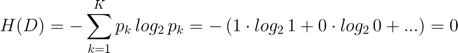
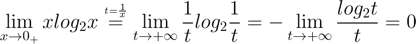
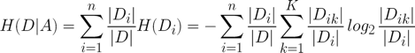
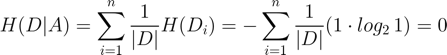
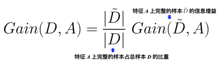
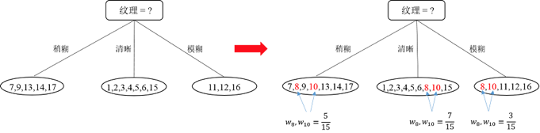
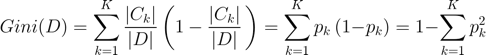
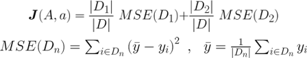
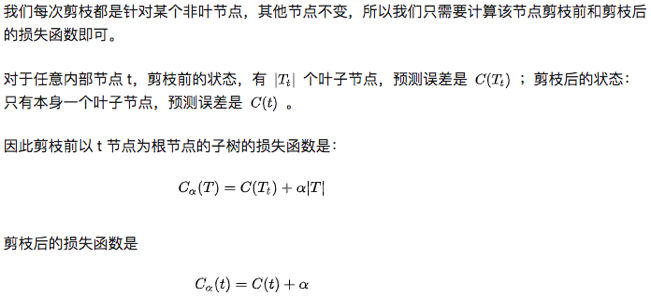
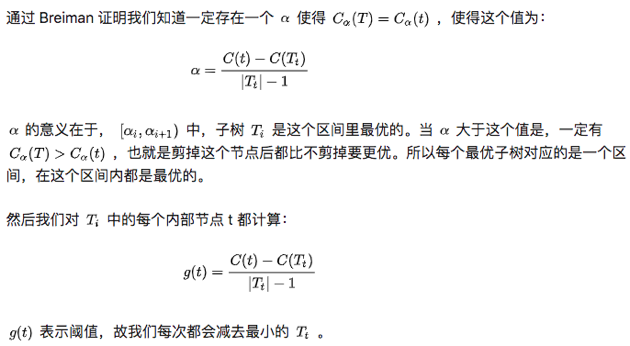

决策树 是一种判别模型。每个节点表示某种特征，节点的分叉路径代表的该特征的值，每个节点所包含的样本集合将通过不同的路径被划分到不同的子节点中。叶节点代表从根节点到该叶节点得到的决策输出。
决策树构造（递归生成）
递归终止的条件
- 当前节点中的样本分类全相同，不需要再分类，则该节点标记为叶节点，输出为该节点的类别
- 当前节点已无特征可划分（特征集合为空），或一开始所有样本的所有特征的值全相同无法划分，
- 该节点标记为叶节点，输出为该节点出现次数最多的类别
- 当前节点无样本，该节点标记为叶节点，输出为其父节点中出现次数最多的类别
如何选择特征进行划分
划分的目标是让各个划分出来的子节点中的样本尽可能地“纯”，即样本的类别都相同。根据划分特征的方法不同有以下三种算法：
- ID3 使用信息增益作为选择特征的准则
- C4.5 使用信息增益比作为选择特征的准则（严格来说使用信息增益和信息增益比）
- CART 使用 Gini 指数作为选择特征的准则
信息熵（information entropy）
信息熵用于度量数据的信息纯度。“熵”一般反映了混乱程度，信息熵的值越小，样本集合 D 的纯度越高。
根据上式可知，因为 $C_{k}$ 表示集合 D 中属于第 k 类样本的样本子集，$p_{k}$ 表示第 k 类样本的概率。
因为 0 ≤ $p_{k}$ ≤ 1，所以信息熵是一个非负数。当样本同属于一个类别时

信息熵为 0（最小值），数据纯度高（只含一种类别）。其中，$log_{2}t$ 比 t 跑得慢，分母更快趋向于无穷

条件熵
设样本集合 D 的某一特征 A 有 n 个值，则在该特征下，样本的条件熵 = 按特征 A 划分得到的样本子集的信息熵的期望

其中，$D_{i}$ 表示样本集 D 中特征 A 取第 i 个值的样本子集，$D_{ik}$ 表示样本子集 $D_{i}$ 中属于第 k 类的样本子子集。条件熵值越小，说明该特征下的样本纯度越高。
信息增益（Information gain）
ID3 算法 使用信息增益作为特征划分准则，信息增益 = 信息熵 - 特征 A 下的条件熵
信息熵 H (D) 告诉我们数据划分之前样本集合 D 的纯度，条件熵 H (D | A) 告诉我们当按照特征 A 划分后得到的样本子集的纯度。
当给定一个样本，我们希望的是划分后的样本纯度越高越好。ID3 尝试计算样本按照不同特征划分得到的信息增益，选出信息增益最大的（划分前样本信息熵相同，但划分后由于不同特征得到的条件熵不同），即划分前后差异越大，说明按照该特征划分时得到的样本子集纯度更高。
存在问题：按照信息增益的选择，总是会倾向于选择取值多的特征，这样每个子集的信息熵最小。比如，当有一特征 A 为“编号”， Ai = { A1 , A1 , … , An } 一共 n 个不重复取值，则按照该特征划分得到子集 Di 都只有一个样本且对应一个类别，条件熵为

相应地，信息增益肯定是最大的那个。但是这样的分类没有任何意义，没有任何泛化能力，类似过拟合。
信息增益比（Information gain ratio）
C4.5 算法 使用信息增益率作为特征划分准则，信息增益比 = 信息增益 / 特征A固有值
其中，$H_{A}(D)$ 为特征 A 的固有值（非条件熵）。可以看到特征 A 的取值越多，分母 $H_{A}(D)$ 越大，信息增益率下降。这样就有效地抑制了 ID3 算法中“选择取值多的特征”的倾向。
这里需要注意，C4.5 并不是直接用增益比最大的特征进行划分，而是先从候选划分特征中找到信息增益高于平均值的特征，再从中选择增益比最高的。
存在问题：信息增益比对取值较少的特征有所偏好（分母越小，整体越大）
C4.5 算法的进步
1. 可以处理连续型特征：将连续特征离散化（二分法）
假设 N 个样本的连续特征 A 有 n 个取值，C4.5 将其排序并取相邻两样本值的平均数共 n-1 个划分点（特征取值），分别计算以这 n-1 个划分点进行二分类时的信息增益，并选择信息增益最大的点作为该连续特征的二元离散分类点。
2. 可以处理缺失值
在建立决策树最初，给所有样本赋予初始权重 w = 1。缺失值问题分为两个问题讨论，
1）如何在特征值缺失的情况下进行划分特征的选择？（即如何计算特征的信息增益比）
以特征 A 划分样本 D 的信息增益

2）选定某划分特征后，对于缺失该特征值的样本如何处理？（即到底把这个样本划分到哪个结点里）
1) 首先将特征值完整的样本 $\tilde{D}$ 划分好
2) 再将缺失该特征值的样本以不同权重划分到所有子节点。
缺失特征值的样本被划分到子节点 $A_{i}$ 的权重 = $A_{i}$ 中的特征值完整的样本 $\tilde{D}_{i}$ 占 $\tilde{D}$ 的比重
举例：现在要将 1～17 个数据按照特征“纹理”划分，其中 8、10 数据缺失该特征。先将剩余 15 个该特征完整的数据按不同特征值 Ai 划分，划分后有三个子集分别有 5，7，3 个样本。再将 8、10 号数据按照权重为 5/15，7/15，3/15 同时划分到三个子集中。

3）可以优化决策树（剪枝）
剪枝主要分为两种
预剪枝 在构造树的过程中，考虑当前节点是否进行分支，可以及早的停止树增长。首先计算该节点不分支时在测试集上的性能，再计算分支后的性能，若分支对性能没有提升，则选择不分支（即剪枝）。
后剪枝 在构造完整个决策树后，从底部叶节点开始往上，考虑该节点分支对模型的性能是否有提升，若无则剪枝（将该节点标记为叶子节点，类别标记为该节点中出现最多的类别）。
预剪枝容易造成 欠拟合，后剪枝通常会训练时间过长，但是泛化能力优于预剪枝。C4.5 算法中使用悲观剪枝法。
基尼指数（Gini index）
又称基尼不纯度，同样是描述信息的混乱程度。样本的基尼指数表示的是集合 D 的不确定性，指数越小，集合不确定性越小，该样本的纯度越高。
样本基尼指数 Gini (D) = 样本被选中概率 * 该样本被分错概率 = 1 - 样本被选中概率 * 该样本分类正确概率

基于特征 A 划分后的样本 D 的基尼指数 Gini (D , A )
CART 算法
ID3 和 C4.5 生成的决策树分支、规模都比较大。CART 算法生成的决策树是二叉树，大大提高计算效率。
CART 算法主要分为两大步骤
将样本递归划分进行建树
用验证数据进行剪枝
其次，CART 树可以是分类树也可以回归树。
分类树：目标变量是离散型变量，使用基尼指数最小化作为特征划分准则
回归树：目标变量是连续型变量，使用平方误差最小化作为特征划分准则
CART 损失函数
CART 是二叉树，当使用某特征 A 的某特征值 a 划分样本集合后只有两个集合：在该特征上取值等于（不等于） a 的样本集合 D1（ D2 ），即对多个取值的特征进行二分类处理。经划分，样本的基尼指数为
某特征 A 具有超过 2 个的取值时（ Ai = { A1 , A1 , … , An } ），需要计算以每一个取值作为划分点，对样本 D 二分类之后的损失函数 J ( A, Ai )，然后选择 J ( A, Ai ) 的最小值 对应的特征取值 a 作为的划分点，即以特征 A 对样本集合 D 进行划分时的最佳划分值。
1）CART 分类树 —— 基尼指数
对于某划分特征 A，样本 D 按照该特征的某特征值 a 被划分为子集 D1 和 D2 ，找出使得左右两子集各自的基尼指数 Gini (D1)、Gini (D2) 最小化时在特征 A 上的取值 a （通过计算特征 A 上不同的取值 Ai 得到，不同的 Ai 会影响划分样本子集 D1 和 D2 的数量）；同时要找出使得 Gini (D1)、Gini (D2) 之和最小化的特征 A （通过选择不同特征 A , B , …计算损失函数）。由此得到的 A , a 即为最佳划分特征及最佳划分特征的划分值。
2）CART 回归树 —— 均方误差
对于某划分特征 A，样本 D 按照该特征的某特征值 a 被划分为子集 D1 和 D2，找出使得左右两子集各自的均方误差 MSE (D1) 、 MSE (D2) 最小化时在特征 A 上的取值 a，同时要找出使 MSEleft 、 MSEright 之和最小化的特征 A 。由此得到的 A , a 即为最佳划分特征及最佳划分特征的划分值。

CART 预测方式
- CART 分类树采用叶节点里概率最大的类别作为预测类别
- CART 回归树输出是具体数值，采用叶节点的均值或中位数作为预测结果
CART 缺失值处理
同样分为两个问题讨论，
1. 如何在特征值缺失的情况下进行划分特征的选择？
最初，CART 算法严格要求划分特征的选择只能使用在该特征上没有缺失值的那部分数据。在后续版本中，CART 算法使用一种惩罚机制来抑制提升值，从而反映出缺失值的影响（例如，如果一个特征在节点的 20% 的记录是缺失的，那么这个特征就会减少 20% 权重或者其他数值）。
2. 选定该划分特征，对缺失该特征值的样本如何处理？
CART 算法的机制是为树的每个节点都找到代理分裂器，无论在训练集上得到的树是否有缺失值都会这样做。在代理分裂器中，特征的分值必须超过默认规则的性能才有资格作为代理（代理就是代替缺失值特征作为划分特征的特征）。当 CART 树中遇到有缺失值的数据时，这个数据划分到左边还是右边是决定于其排名最高的代理，如果这个代理的值也缺失了，那么就使用排名第二的代理，以此类推，如果所有代理值都缺失，那么默认规则就是把样本划分到子集较大的那个子节点。代理分裂器可以确保无缺失训练集上得到的树可以用来处理包含缺失值的新数据（预测未知数据）。
CART 树优化（剪枝）
CART 算法中使用代价复杂度剪枝


ID3 C4.5 CART 三种算法差异
划分标准的差异：ID3 使用信息增益偏向特征值多的特征；C4.5 使用信息增益率克服信息增益的缺点，偏向于特征值小的特征；CART 使用基尼指数克服了 C4.5 需要求对数的巨大计算量，偏向于特征值较多的特征。
使用场景的差异：ID3 和 C4.5 都只能用于分类问题；CART 可以用于分类和回归问题。ID3 和 C4.5 是多叉树，速度较慢；CART 是二叉树，计算速度很快。
样本数据的差异：ID3 只能处理离散型数据且缺失值敏感；C4.5 和 CART 可以处理连续型数据且有多种方式处理缺失值。从样本量考虑的话，小样本建议 C4.5、大样本建议 CART。C4.5 处理过程中需对数据集进行多次扫描排序，处理成本耗时较高；而 CART 本身是一种大样本的统计方法，小样本处理下泛化误差较大 ；
样本特征的差异：ID3 和 C4.5 层级之间只使用一次特征；CART 可多次重复使用特征；
剪枝策略的差异：ID3 没有剪枝策略；C4.5 是通过悲观剪枝策略来修正树的准确性；CART 是通过代价复杂度剪枝。
Reference
https://zhuanlan.zhihu.com/p/85731206
https://zhuanlan.zhihu.com/p/32053821
https://www.zhihu.com/question/22697086
https://zhuanlan.zhihu.com/p/27905967